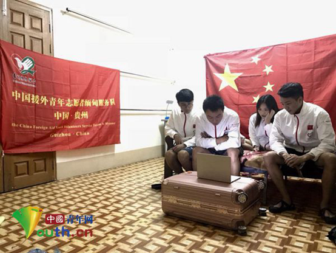

援缅甸志愿者畅谈十九大祝祖国繁荣昌盛
桂电志愿者网 日期：2017-10-20 来源：中国青年网
中国青年网北京10月20日电 （记者李川 通讯员赖成阳）10月18日上午9时，中国共产党第十九次全国代表大会在京顺利开幕。中国青年志愿者海外服务项目援缅甸志愿服务队志愿者在服务地曼德勒积极收看十九大开幕会。他们认真聆听了习近平总书记的报告，对过去五年国家取得的成就感到振奋！从金砖会议，APEC会议的主场外交；从一带一路的建设、共建人类命运共同体，党带领全国人民砥砺奋进，让世界看到了中国方案，也让全世界看到了中国的担当。他们深深地为祖国的发展而自豪。在收看结束后，他们纷纷发表感言，畅谈收获和体会。

中国青年志愿者海外服务项目援缅甸项目曼德勒服务地的志愿者正在收看党的十九大开幕会现场直播。援缅甸项目志愿服务队供图
援缅甸项目志愿服务队副队长龙沁洁表示，在全世界瞩目的时刻，作为一名援缅甸项目的海外青年志愿者，深刻感受到了祖国的日益强大和国际地位的提升。
“如今的中国已跃升为世界第二大经济体，在全球问题上也扮演着更为重要的角色，相应地也承担了更多的责任，正是有着这份担当以及命运共同体的视野，帮助和促进了许多不发达国家的建设，赢得了他们的信任与支持。同样，作为不断进步的中国当代青年，我们不仅要学习党的十九大精神，响应习近平总书记的号召，也要有辽阔的胸襟和长远的眼光，共建共享共筑中华民族伟大复兴的中国梦。”龙沁洁讲道。
吴俊峤，是一名来自贵州师范大学的援缅志愿者。他表示，习总书记说：“我们不能闭关锁国，要走出去，积极向其他国家学习”，作为一名新青年援外志愿者，不单单只是志愿服务，更是国与国之间交流的使者。要通过做好志愿服务工作向其他国家展示中国新青年高尚的道德情操和思想，也要为国家外交大局贡献自己的一份绵薄之力。作为新时代的新青年，要高举中国特色社会主义旗帜，积极倡导“一带一路”，互利共赢，将中华民族伟大复兴的中国梦在接力奋斗中变为现实。
志愿者岳欣雨，主要负责乒乓球训练，在缅甸开展志愿服务工作已快半年。“今天观看了中国共产党第十九次全国代表大会后，深深感到祖国的强大，这半年的海外服务经历令我感到弥足珍贵！祖国是我们坚强的后盾，作为一名援外志愿者，我非常荣幸能成为中国与缅甸之间体育技术交流的使者，为我国外交大局贡献一份力量。”
“对祖国的飞速发展、日益强大、日新月异的变化感到无比的欣悦”，援缅甸志愿者许思德看完十九大开幕会后非常激动。他表示，在缅甸服务的这半年里，他的工作是服务于缅甸中国企业商会，对中国企业在缅甸的发展、中国企业对一带一路所做出的巨大贡献、中国企业对沿线国家所做出的贡献深有感触。
图为服务缅甸的17名中国青年志愿者合影留念。团贵州省委 供图
“在缅甸中国企业商会服务的这半年里，我深刻的感受到了中国企业的严谨和企业员工勤奋的工作作风，他们与缅甸人民互帮互助、和睦相处。中国企业的入驻，改善了当地的就业环境，也带动了当地经济发展，当地的员工以能够在中国企业工作为豪，越来越多的缅甸老百姓也喜欢上中国文化，学习着说中国话、写中国字。这是中国文化的渊博感染了缅甸人民，是中国企业，中国企业员工，海外服务计划志愿者等一批批人的友好传播。是新中国成立以来一代代人，一辈辈人所努力的结果。祖国强大了，祖国人民富裕了。拥有这样强大的国家作为后盾，生活在这样一个安全、强盛的国度里，我是幸运的、是来之不易的，作为一名青年志愿者，我无不时刻提醒自己努力学习，不断提升自己，为祖国、为祖国人民、为中国的伟大复兴、为中国梦，作出自己应有的贡献。最后，祝愿我们的祖国越来越富强，越来越繁荣昌盛！”
据悉，中国青年志愿者援缅甸服务队成员共17人，5月8日抵达仰光，他们在缅甸内比都、曼德勒等地从事武术、乒乓球、建筑、信息技术等专业的志愿服务工作。
【责任编辑：李彦龙】